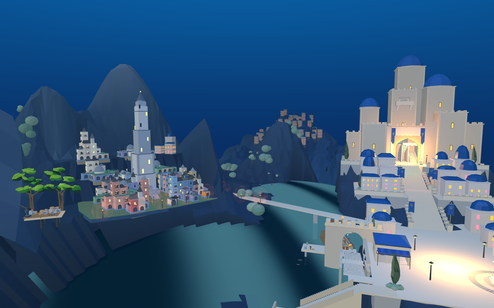

射线命中原营地的hills及hills-closed-skirt，示例位置分别约高出海面2.63米、0.39米；这些位置海陆遮罩约0.86，海面有效。不是可以直接删掉的旧圣城模型或漏补的水洞。
Godot营地主地形81个点、外围土坡80个点与当前Web匹配，最大误差分别1.99毫米和2.32毫米。仅为抽样核对，不代表所有地形或整个区域无问题。

此机位用于观察建筑与岸边，画面有裁切，不作为整体构图已达到目标的证据。未修改默认游戏镜头。
本轮没有改动正式地形或删除营地。后续将按区域衔接优化这些真实地形；当前主堡比例、两城建筑层次、前港美术和完整战斗仍需推进。
像素射线与海陆遮罩 · Godot抽样比较 · 原游戏